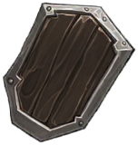
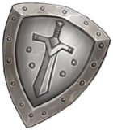
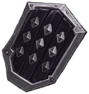
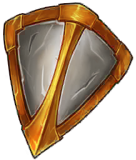
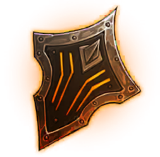
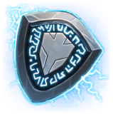

방패 10종
방패 부위 장비 전체입니다. 등급 오름차순으로 정렬했습니다.
요약 표
| 이름 | 등급 | 분류 | 직업 | 공격 | 체력 | 물리 방어력 | 마법 방어력 | 제작 확률 | 제작 시간 | 제작 골드 | |
|---|---|---|---|---|---|---|---|---|---|---|---|
 | 나무 방패 | C | 방어구 | 공용 | - | 500 | 300 | 200 | 100 | 0.17 | 500,000 |
 | 강철 방패 | R | 방어구 | 공용 | - | 1,900 | 1,150 | 760 | 100 | 0.5 | 1,500,000 |
 | 작은 수호자 | R | 방어구 | 공용 | - | 1,200 | 1,600 | 450 | 100 | 0.5 | 1,500,000 |
| 빛바랜 룬 방패 | R | 방어구 | 공용 | - | 1,200 | 450 | 1,350 | 100 | 0.5 | 1,500,000 | |
 | 온화한 수호자 | R | 방어구 | 공용 | - | 3,000 | 370 | 250 | 100 | 0.5 | 1,500,000 |
 | 플레어 쉴드 | E | 방어구 | 공용 | - | 5,500 | 2,800 | 1,950 | 80 | 60 | 5,000,000 |
| 루나 쉴드 | E | 방어구 | 공용 | - | 4,000 | 3,400 | 1,350 | 80 | 60 | 5,000,000 | |
 | 실프 쉴드 | E | 방어구 | 공용 | - | 4,000 | 1,550 | 2,700 | 80 | 60 | 5,000,000 |
| 라바 쉴드 | RD | 방어구 | 공용 | - | 8,000 | 4,720 | 4,200 | 40 | 720 | 50,000,000 | |
| 천휘방패 | RD | 방어구 | 공용 | - | 15,250 | 13,900 | 14,650 | 40 | 720 | 50,000,000 |
장비 상세
나무 방패 C
특수 효과 15초마다 최대 체력의 10% 회복
아이템 스킬 일반 회복 · 유형 cool · 쿨 15
제작 확률 100 · 시간 0.17 · 골드 500,000 · 강화 보호 재료 망치 ×5 · 강화표 SD_C
제작 재료(m_List) Material MAT_EA_BOW1 ×15 · Material GloryAmor_01-C_A_AncientArmor_01 ×10
강철 방패 R
특수 효과 17초마다 최대 체력의 20% 회복
아이템 스킬 희귀 회복 · 유형 cool · 쿨 17
제작 확률 100 · 시간 0.5 · 골드 1,500,000 · 강화 보호 재료 망치 ×10 · 강화표 SD_R
제작 재료(m_List) Material MAT_BODY_M_01_Alternative ×30 · Material wa-11 ×20 · Material DungeonFloor01 ×5 · (빈 칸) ×1
작은 수호자 R
특수 효과 방어력에 특화된 방패
제작 확률 100 · 시간 0.5 · 골드 1,500,000 · 강화 보호 재료 망치 ×10 · 강화표 SD_R
제작 재료(m_List) Material MAT_CYBER_SF_KATANA ×45 · Material wa-11 ×30 · Material DungeonFloor01 ×10 · AnimationClip FX_LightningBall ×10 · (빈 칸) ×1
빛바랜 룬 방패 R
특수 효과 마법 방어력에 특화된 방패
제작 확률 100 · 시간 0.5 · 골드 1,500,000 · 강화 보호 재료 망치 ×10 · 강화표 SD_R
제작 재료(m_List) Material MAT_HornedKnight_HELMET_05 ×45 · Material wa-11 ×30 · Material DungeonFloor01 ×10 · AnimationClip FX_LightningBall ×10 · (빈 칸) ×1
온화한 수호자 R
특수 효과 높은 체력을 자랑하는 방패
제작 확률 100 · 시간 0.5 · 골드 1,500,000 · 강화 보호 재료 망치 ×10 · 강화표 SD_R
제작 재료(m_List) (빈 칸) ×45 · Material wa-11 ×30 · Material DungeonFloor01 ×10 · AnimationClip FX_LightningBall ×10 · (빈 칸) ×1
플레어 쉴드 E
특수 효과 17초마다 최대 체력의 25% 회복
아이템 스킬 영웅 회복 · 유형 cool · 쿨 17
제작 확률 80 · 시간 60 · 골드 5,000,000 · 강화 보호 재료 전설 망치 ×10 · 강화표 SD_E
제작 재료(m_List) Material wa-11 ×50 · Material Cylinder001Mat ×1 · (빈 칸) ×5 · (빈 칸) ×5 · AvatarMask (이름 없음) ×1 · AnimatorController (이름 없음) ×3
루나 쉴드 E
특수 효과 루나 스톤으로 재련된 쉴드
제작 확률 80 · 시간 60 · 골드 5,000,000 · 강화 보호 재료 전설 망치 ×10 · 강화표 SD_E
제작 재료(m_List) Material wa-11 ×50 · Material Cylinder001Mat ×1 · (빈 칸) ×5 · (빈 칸) ×5 · AvatarMask (이름 없음) ×1 · (빈 칸) ×3
실프 쉴드 E
특수 효과 실프 스톤으로 재련된 쉴드
제작 확률 80 · 시간 60 · 골드 5,000,000 · 강화 보호 재료 전설 망치 ×10 · 강화표 SD_E
제작 재료(m_List) Material wa-11 ×50 · Material Cylinder001Mat ×1 · (빈 칸) ×5 · (빈 칸) ×5 · AvatarMask (이름 없음) ×1 · AnimatorController (이름 없음) ×3
라바 쉴드 RD
특수 효과 용암의 정수를 받은 쉴드 17초마다 최대 체력의 30% 회복
아이템 스킬 영웅 회복 · 유형 cool · 쿨 17
제작 확률 40 · 시간 720 · 골드 50,000,000 · 강화 보호 재료 전설 망치 ×10 · 강화표 SD_RD
제작 재료(m_List) Material wa-11 ×50 · Material Cylinder001Mat ×10 · (빈 칸) ×20 · (빈 칸) ×20 · AvatarMask (이름 없음) ×10 · (빈 칸) ×10
천휘방패 RD
특수 효과 17초마다 최대 체력의 20% 회복 후 4초간 스턴,침묵,슬로우 무효화
아이템 스킬 천휘방패 · 유형 cool · 쿨 17
제작 확률 40 · 시간 720 · 골드 50,000,000 · 강화 보호 재료 전설 망치 ×10 · 강화표 SD_RD
제작 재료(m_List) Material wa-11 ×50 · Material Cylinder001Mat ×10 · (빈 칸) ×20 · (빈 칸) ×20 · AvatarMask (이름 없음) ×10 · (빈 칸) ×999
원본: W_Item_Scriptable. 빨간 칩은 아이템이 아닌 에셋을 가리키는 재료 칸입니다(장비 개요 참조).